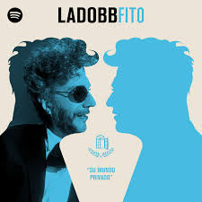
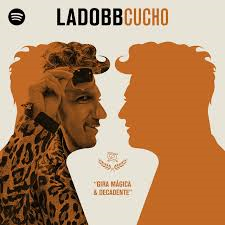
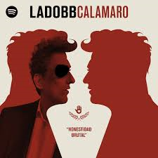
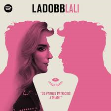
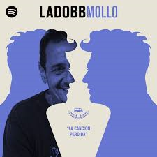
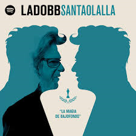

En cada episodio, Bebe Contepomi te lleva a vivir una experiencia única con las figuras
más importantes de la música. Desde increíbles viajes por el mundo, hasta momentos íntimos y
especiales en la intimidad de su hogar. Vas a conocer algo nuevo del mundo de la música que nunca
creíste que existía: El Lado BB.
Escuchá Lado BB
Todos los episodios
#LADO BB
Escuchalos completos en Spotify o en Youtube.

Episodio 01 - Fito Páez y su mundo privado

Episodio 02 - Cucho Parisi y una giramágica y decadente

Episodio 03 - Andrés Calamaro y toda su honestidad brutal

Episodio 04 - Lali Espósito_ De Parque Patricios a Miami

Episodio 05 - Ricardo Mollo en busca de la canción perdida

Episodio 06 - Gustavo Santaolalla y la magia de Bajofondo